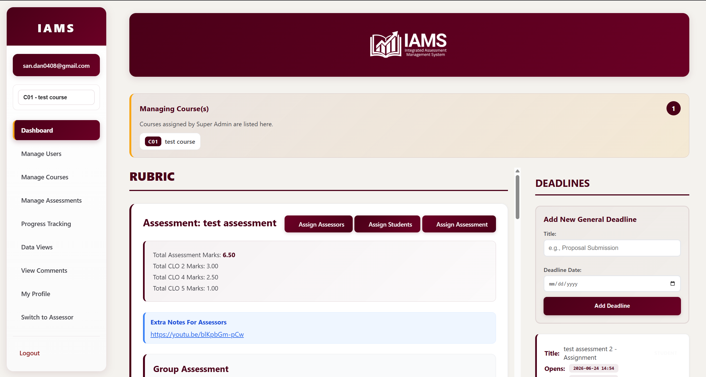

Rubrics, contribution and feedback, managed together for fairer academic assessment.
Explore the assessment processTry a rating. Explore how marking feels.
Contributed effectively to the mechanical design work
Communicated proactively with the rest of the team
Example only. Your changes are not saved.
Projects, presentations, portfolios, and peer review capture what exams cannot. But they are heavy to operate and the logistics, not the education, are where courses get stuck.
Configure any assessment you can express as a rubric or checklist. IAMS collects the marks from every evaluator, reveals individual contribution, returns feedback, supports moderation, and exports auditable outcome evidence.
Set your assessment occasions, evaluator roles, and rubrics.
Each evaluator marks through their own rubric or checklist.
IAMS aggregates marks and applies the contribution factor and you be the moderator.
Students receive feedback and you export outcome evidence.
One configurable engine, set up entirely by you, no fixed template, no discipline lock-in.
Mix sub-rubrics, direct ratings, and comment questions on the same rubric, and reuse a saved blueprint to spin up a new one in a click.
Assign assessors by group, by rubric, or by individual student, self, peer, and group assessments are configured per student, per assessment.
A self-and-peer contribution factor reveals who contributed to a team mark. This computed transparently, and always yours to override.
Self, peer, and group comments are returned to students in one unified view, with peer identities kept anonymous.
Trace every mark through averaging and weighting, moderate any result, and export the full tabulation to Excel-ready CSV.
Watch completion for every assessor and student on one dashboard, with automatic email alerts when an assessment opens or its deadline is approaching.
Any discipline, anywhere. IAMS handles any human-evaluated assessment you can express as a rubric or checklist.
A quick look at three core workspaces inside IAMS, from the admin’s live dashboard to the student’s own view of their marks.

IAMS was first deployed to manage the complete assessment of an engineering capstone for every perspective, in one system.
From capstone assessment innovation to the IAMS source code.
GOLD MEDAL in New Academia Learning Innovation (NALI2020) Exhibition and Competition.
Registered as a copyright (IP/CR/00663).
GOLD MEDAL in New Academia Learning Innovation (NALI2022) Exhibition and Competition.
NALI AWARD 2023 in New Academia Learning Innovation (NALI2023).
Registered under copyright (LY2026E07181).
“A very easy external management system with intricate functions that can accommodate complex rubric designs and as well as promote accountability for the students.”
IAMS proposes and you moderate and approve. Your rubrics, your decisions, your data. The platform does the work, never the judging.
IAMS is under active development. Here’s what’s coming next to deepen the insight you get from every assessment.
Cohort comparisons, attainment trends across terms, and configurable dashboards that go beyond today’s spreadsheet exports.
AI-assisted review of marking patterns and outcome evidence, flagging inconsistencies, summarising cohort performance, and drafting feedback for markers to check and approve.
Clone a rubric, its evaluators, and its deadlines into a new term or section in one step, set it up once, reuse it every offering.
Bulk-import students, lecturers, and rubric structures from spreadsheets, and export richer, ready-to-file outcome reports beyond CSV.
IAMS is available as a subscription for institutions, programmes, and courses. We are onboarding new users now. Tell us about your context and we will share pricing and set up a demo.
No commitment. This starts a conversation, not a contract.